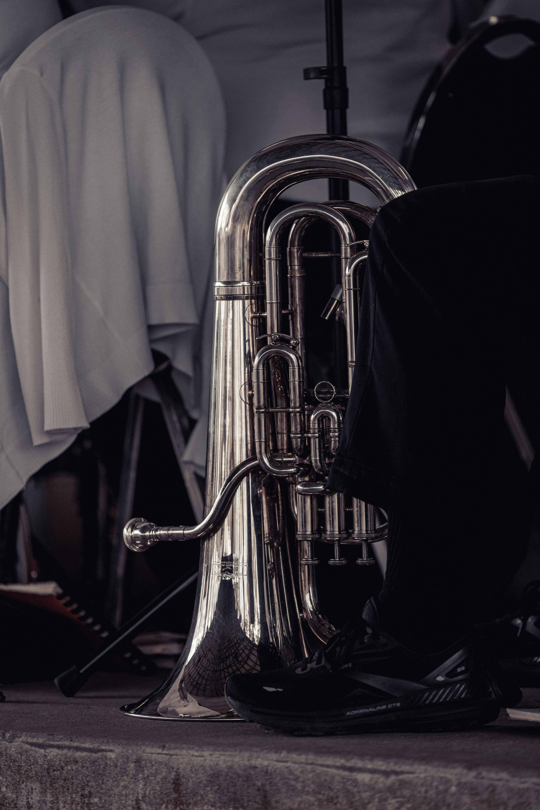

Description:
The tuba is the largest and lowest-pitched instrument in the brass family and is known for its deep, powerful, and full sound. It is commonly used in concert bands, marching bands, orchestras, and brass ensembles, where it often provides the low foundation of the group. The main parts of a tuba include the mouthpiece, leadpipe, valves, valve casings, tuning slides, water keys, large sections of coiled tubing, and a wide bell. Its large size and long tubing give the tuba its characteristic low sound.

How to Play the Tuba:
The tuba is played by buzzing the lips into the mouthpiece while blowing air through the instrument. The player presses different combinations of valves to change the length of the tubing and produce different notes. Notes are also controlled by changing lip tension and airflow. Because of its large size and long tubing, the tuba requires strong and steady breath support to produce a clear, full tone.